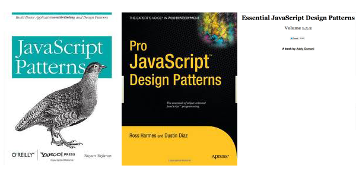
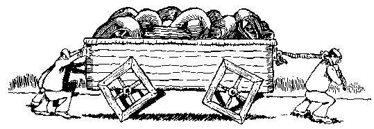

Organizational Patterns, Reusable DOM Components, Consistent Code Base
Current lack of a global organizational pattern makes it difficult to reuse great DOM components, resulting in a glut of very different code doing the same thing.
Three Problems
Organizational Patterns
Reusable DOM Components
Consistant Code Base
Organizational Pattern Goals
Speaking structural, not creational
Logically organized into a globally-exposed hierarchy
File-based separation of concerns, concatenated for deployment
Organizational Pattern Options

Creational Pattern
Constructor Pattern
Singleton Pattern
Module Pattern
Yahoo's Sandbox Module Pattern
Revealing Module Pattern
Revealing Module Pattern Example
//Immediately-Invoked Function Expression (IIFE)
myGlobal = (function() {
var privateVar = '';
function privateMethod() {
}
function publicMethod() {
privateMethod();
}
return {
set: publicMethod,
getPrivate: function() { return privateVar; }
};
}())
Revealing Module Pattern Example
//IIFE
(function($,BI,undefined) {
BI.namespace('userData');
var names = {},
preference;
//sets the user-preferred service to use when getting username
function setPreference(pref){
preference = pref;
}
//stores the name associated with a service
function setName(service,name) {
names[service] = name;
}
//gets a name by service, or the prefered name if used with no arg
function getName(service) {
return service ? names[service] : names[preference] || '';
}
BI.userData = {
setPreference: setPreference,
setName: setName,
getName: getName,
};
}(jQuery, BI))
Revealing Module Pattern Benefits
Self contained
Via namespace, provides single-entry hierarchy
Usable on CMS and user-frontend
jQuery plugins use a RMP variant
Reusable DOM Components
Solved problem

Library Plugins
jquery/tinymce
Library Plugin Example jQuery
(function($,BI,undefined){
var privateSharedVar = '';
var privateSharedMethod = function() {};
//plugin "constructor"
var MyPlugin = function(element, options) {
//Instance Vars
this.$el = $(element);
//Extend the user-defined options with defaults
this.options = $.extend({}, {defaults: '', options: ''}, options);
//bind to the dom el, etc
this.$el.click(function() {})
};
MyPlugin.prototype.publicMethod = function() {};
//boilerplate
$.fn.myplugin = function(option) {
return this.each(function () {
var $this = $(this),
data = $this.data('myplugin'),
options = typeof option == 'object' && option;
if (!data) {
$this.data('myplugin', (data = new MyPlugin(this, options)));
} else if (typeof option == 'string') {
data[option]();
}
});
};
}(jQuery,BI));
//usage
$('div').myplugin().myplugin('publicMethod')
<h1>Edit Event</h1>
<form>
<h2>Setup and Landing Page</h2>
<p><label>Event Name</label><input type="text" data-bind="value: name" /></p>
<p><label>Tagline Color</label><input type="text" data-bind="colorpicker: taglineColor,value: taglineColor" /></p>
<h2>Agenda</h2>
<p><label>Agenda Page Content</label><textarea rows="8" cols="80" data-bind="tinymce: agenda_content"></textarea>
<h2>Sponsor Right Rail</h2>
<div data-bind="sortable: rightRail">
<div class="sponsor">
<p><label>Section Header:</label><input type="text" data-bind="value: header" /></p>
<div data-bind="sortable: {data: logos,connectClass: 'imgs'}">
<div class="imgs">
<p><label>Sponsor Logo/Image:</label><input type="text" data-bind="value: img" /></p>
<p><label>Sponsor Url:</label><input type="text" data-bind="value: url" /></p>
<button data-bind="click: $root.deleteLogo">-Delete Logo</button>
</div>
</div>
<!-- parent is used, because we are nested 2 levels deep inside the viewModel and the method is on the top level-->
<button data-bind="click: $parent.addLogo">+Add Another Logo</button>
<button data-bind="click: $parent.deleteSection">-Delete Section</button>
<hr />
</div>
</div>
<button data-bind="click: addSection">+Add Another Section</button>
<button type="submit">Save</button>
</form>
Knockout.js Example Page-Controller Javascript
/*
Controller for the Events data type
Dependancy: jquery, jquery.validate, jquery.colorpicker, knockout, base, data,
ko, querystring, plugins/colorpicker
*/
(function($,ko,BI,undefined) {
var dataModel,
vm;
// Define operations the UI can impliment. At runtime, 'this' will be our
// active knockout View Model (so we are directly modifying the data that is
// synced with the DOM)
var operations = {
addSection: function() {
//one line, doing same as above
this.rightRail.push(BI.ko.wrap($.extend(true,{},dataModel.rightRail[0])));
},
deleteSection: function(currentlogo, ev) {
vm.rightRail.remove(this);
},
addLogo: function(sectionData) {
//one line, doing same as above
this.logos.push(BI.ko.wrap($.extend(true,{},dataModel.rightRail[0].logos[0])))
},
deleteLogo: function(currentlogo, ev) {
$ev = $(ev.srcElement)
var index = $ev.parents('.sponsor').index();
vm.rightRail()[index].logos.remove(this);
},
save: function() {
//we delegate to the data module, passing the entire viewModel
BI.data.save('event', this);
}
};
//Use BI.data to get the data for the page, and the blank template for the events
//We use Bi.location to grab the event id from the querystring
BI.data.get({
type: 'event',
id: BI.location.qs.get('id'),
callback: function(data,blankObj) {
//store the blank data model so we can use it later in the operations.
dataModel = blankObj;
//construct a view model with the data that was returned using BI.ko
var viewModel = BI.ko.constructViewModel({
data: data,
dataTemplate: blankObj
});
//extend the viewModel with the operations we defined earlier
$.extend(true,viewModel,operations);
vm = viewModel;
//initialize the knockout DOM bindings
ko.applyBindings(viewModel);
$('form').submit(function(e) {vm.save();e.preventDefault()});
}
});
}(jQuery, ko, BI))
Knockout.js Benefits
Simplistic HTML Templates (could use any template language with a js parser)
Databinding and dynamic form updates based on model updates (sorcery!)
jQuery plugin integration through adapters
JSON data models that can be provided by the server or defined on a per-controller basis
Plays nice with third-party validation libraries
Easy to write custom bindingHandlers to extend library functionality (data-source,anyone?)
Current lack of a global organizational pattern makes it difficult to reuse great DOM components, resulting in a glut of very different code doing the same thing.
Organizational Patterns
Reusable DOM Components
Consistant Code Base
By using the Revealing Module Pattern and writing Library Plugins we can utilize the standardized features of Knockout.js to create a Consistent HTML/JS codebase for the CMS.
Revealing Module Pattern
Library Plugins
Knockout.js
Up in the Air
Templating
Validation (Can we Share?)
Server->Client Data Interchange Format (JSON,XML,Forms)